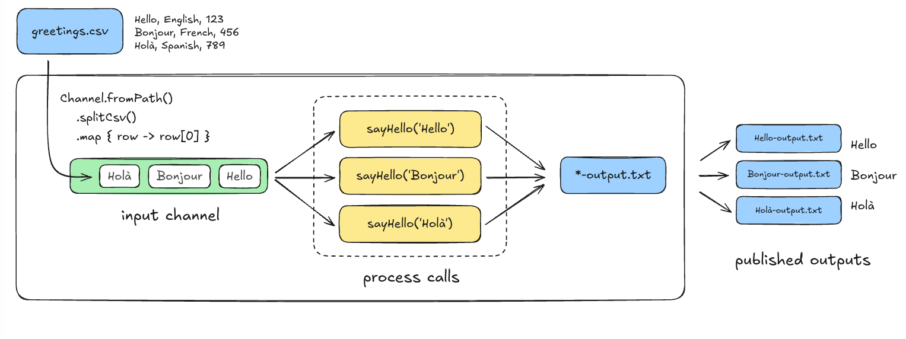

A Guide to Nextflow & nf-core
2026-03-10
Let’s assume ..
You just got 500 FASTQ files from the sequencing run.
For each sample, you need to:
- Run quality control
- Trim adapters
- Align reads to a reference genome
- Call variants
- Generate a final report
❓Are you going to write a bash loop and hope nothing crashes halfway through?
Bash is Poweful. But ..
Managing a multi-step, multi-sample pipeline is a different challenge:
🟡 No built-in fault tolerance
🟡 Manual parallelization
🟡 Hard to reproduce
🟡 Not portable
There has to be a better way ..
- Automates orchestration of tasks and data dependencies
- Handles compute resources across HPC, cloud, and local environments
- Recovers from failures without restarting everything
- Scales from laptop → cluster → cloud seamlessly
A Workflow Manager solves All of this ..
| Feature | Why It Matters |
|---|---|
| 🛡️ Fault-tolerant | Recovers from failures automatically |
| ⚡ Parallelizable | Runs independent tasks simultaneously |
| 🔁 Reproducible | Same input → same output, every time |
| 🌍 Portable | Runs on laptop, HPC cluster, or cloud |
Meet Nextflow
A workflow manager built for bioinformatics!
- Describes your pipeline as a series of connected steps
- Built-in support for containers (Docker, Singularity)
- Runs on local, HPC & Cloud
- Backed by a dedicated bioinformatics community (nf-core)
Nextflow vs The Rest
| Tool | Strengths | Best For |
|---|---|---|
| Nextflow | Dataflow, containers, cloud | Bioinformatics pipelines |
| Snakemake | Python-based, file-driven | Python-centric teams |
| WDL/CWL | Specification specifications | Platform interoperability |
| Airflow | General-purpose, scheduling | Data engineering |
Let’s dive into Nextflow
📚 Follow along: training.nextflow.io/latest/hello_nextflow/
Setting up your workspace
🔗 training.nextflow.io/latest/hello_nextflow/00_orientation/
GitHub Codespaces ☁️
- Just a browser + GitHub account
- Pre-configured environment
- ✅ Recommended for beginners
Local Setup 💻
- Nextflow installed
- Docker installed
- Code editor (VS Code)
Let’s make sure everything is ready 🖥
Follow Along!
Your Codespace is already set up - just open the terminal and run these commands.
Part 1: Hello World - Let’s walkthrough the Starter Script
The hello-world.nf script is already in your Codespace current directory.
hello-world.nf
💡 Two key blocks — process defines what to run, workflow defines when to run it.
Running Your First Workflow 🚀
💡 [65/7be2fa] is the path to the output in work/ — every run gets its own unique directory!
What’s Inside work/? 📂
💡 .command.sh is your best friend when debugging — it shows exactly what Nextflow ran!
Publishing Your Results 📁
Outputs are buried in work/ by default — use the output block to save them somewhere accessible.
hello-world.nf
💡 Default mode creates symlinks — if you delete work/, you lose the file. Use mode 'copy' to be safe!
Variable Input via Command Line
Three changes needed — add an input block, update the script, and set up params.
hello-world.nf
process sayHello {
input:
val greeting // ← Step 1: accept a variable
output:
path 'output.txt'
script:
"""
echo '${greeting}' > output.txt // ← Step 2: use the variable
"""
}
/*
* Pipeline parameters
*/
params {
input: String = 'Holà mundo!' // ← Step 3: set a default value
}
workflow {
main:
sayHello(params.input) // ← pass it to the process
}💡 --input = pipeline parameter | -resume = Nextflow setting — note the difference in hyphens!
Two Concepts. That’s All you need.
⚙️ Process
- A single step in your pipeline
- Wraps a script (Bash, Python, R, etc.)
- Defines inputs and outputs
🔀 Channel
- The pipe that connects your processes
- Passes data between steps automatically
- Drives the dataflow model

The Superpower You Needed: -resume 🔄
💡 Nextflow hashes inputs — if nothing changed, it skips the task!
🖥️ Your Turn: Run Hello World!
Observe the output
- What does the console show?
- Where is
output.txt? - What’s in the
work/directory?
Now try this
- Run with a custom greeting:
--input 'Bonjour!' - Make a change and rerun with
-resume - Check
results/hello_world/output.txt
Part 2: Hello Channels - How Data flows through Channels
Channels are how data flows between processes in Nextflow.
💡 Each item in the channel runs the process independently and in parallel
👉 Follow Along
Part 3: Hello Workflow
Connect multiple processes — output of one becomes input of the next.
💡 This is where Nextflow’s dataflow parallelism really shines
👉 Follow Along
Part 4: Hello Modules 📦
Modules let you reuse processes across pipelines — no copy-pasting.
💡 This is the foundation of how nf-core shares tools across the community
👉 Follow Along
Part 5: Hello Containers
Each process can run in its own container — no more dependency conflicts.
💡 Same pipeline, same results — on any machine, any cluster, any cloud
Part 6: Hello Config
nextflow.config controls how your pipeline runs — without touching the code.
💡 Switch from laptop → HPC → cloud by just changing the profile
👉 Follow Along
Welcome to nf-core
From writing Nextflow → joining a global community
- 🏠 A community of pipeline developers
- 📦 90+ curated pipelines (RNA-seq, ATAC-seq, sarek…)
- 🧱 1200+ reusable modules
- 🛠️ CLI tools for building & testing
- 📋 Standards for quality and reproducibility

How to run an nf-core pipeline
All nf-core pipelines follow the same pattern:
💡 Every nf-core pipeline has a test profile with small built-in data — no files needed!
What is nf-core/demo? 🧪
A minimal nf-core pipeline built for learning and testing.
It runs three simple steps:
FASTQC→ quality controlSEQTK_TRIM→ adapter trimming
MULTIQC→ summary report
💡 Perfect for understanding how a real nf-core pipeline is structured — without the complexity!
👉 Follow Along
Reusable Building Blocks: nf-core Modules
Pre-built, tested, community-maintained process wrappers:
Each module comes with:
- ✅ Container definitions
- ✅ Conda environment
- ✅ Unit tests
- ✅ Meta map for sample tracking
Your nf-core Swiss Army Knife 🔧
The nf-core Community 🌍
Stay Connected
- 💬 Slack — nf-co.re/join
- 🐙 GitHub — github.com/nf-core
- 🎥 YouTube — Weekly Bytesize talks
- 🦋 Bluesky — @nf-co.re
- 💼 LinkedIn — nf-core
nf-core Hackathon — March 2026 🎉
- 📅 March 11–13, 2026
- 🌐 Hybrid — in-person hubs + online
- 🗺️ 29 local sites across 20 countries
- 🔬 37 registered projects
From Learner to Contributor
Where to look
- github.com/nf-core
- Filter by
good first issuelabel - Check
documentationlabels - Browse module requests
Great first contributions
- 📝 Fix documentation typos
- 📋 Improve parameter descriptions
- 🧪 Add test cases
- 🐛 Fix linting warnings
🖥️ Your First Real Contribution
# 1. Fork a repo on GitHub
# 2. Clone your fork
git clone https://github.com/YOUR_USER/nf-core-REPO.git
cd nf-core-REPO
# 3. Create a branch
git checkout -b fix/my-first-contribution
# 4. Make changes, then lint
nf-core lint
# 5. Commit and push
git add .
git commit -m "Fix: description of change"
git push origin fix/my-first-contribution
# 6. Open a PR on GitHub!Keep These Handy
Continue Your Journey
| Resource | Link |
|---|---|
| 📚 Hello Nextflow Course | training.nextflow.io/latest/hello_nextflow/ |
| 🚀 Getting Started | training.nextflow.io/latest/hello_nextflow/00_orientation/ |
| 🏠 nf-core Website | nf-co.re |
| 💬 nf-core Slack | nf-co.re/join |
| 🎥 Bytesize Talks | nf-co.re/events |
🎉 You went from “What is Nextflow?” to opening a real PR!
Now, let’s go build something amazing! 🚀
nf-core Hackathon 2026